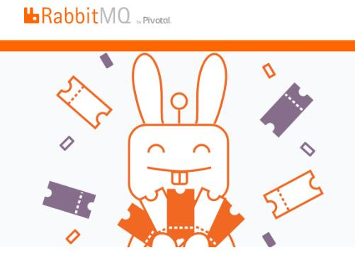

Message flow in RabbitMQ

- Direct: The message is routed to the queues whose binding key exactly matches the routing key of the message. For example, if the queue is bound to the exchange with the binding key pdfprocess, a message published to the exchange with a routing key pdfprocess is routed to that queue.
- Topic: The topic exchange does a wildcard match between the routing key and the routing pattern specified in the binding.
- Fanout: A fanout exchange routes messages to all of the queues bound to it.
- Asynchronous Messaging
- Developer Experience
- Distributed Deployment
- Enterprise & Cloud Ready
- Tools & Plugins
- Management & Monitoring
